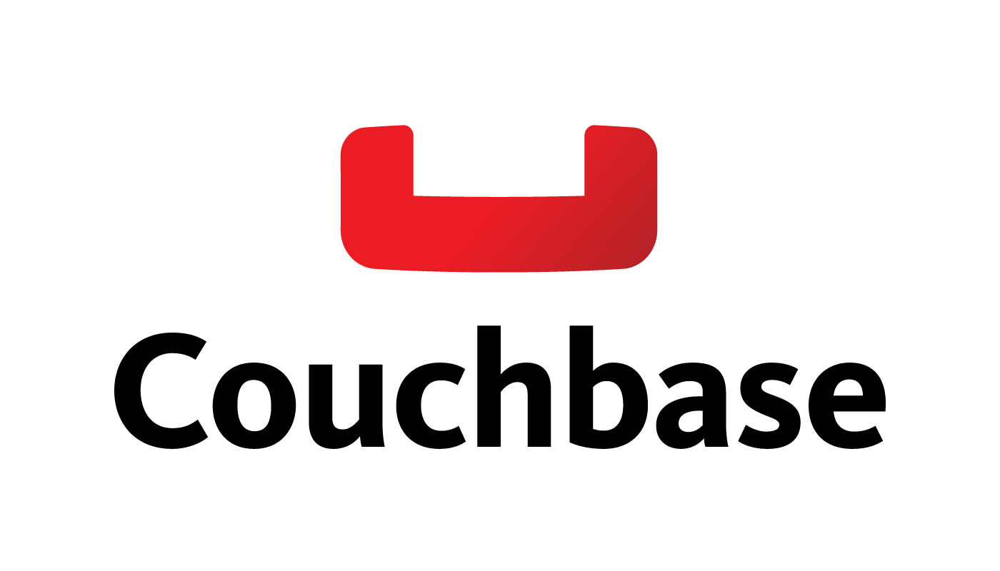

Skills
Programming & Scripting
- Python
- SQL
- R
- Node.js
- Javascript
- Scala
Databases
- Couchbase
- MongoDB
- SQL Server
- Postgresql
- HBase
Cloud & other Platforms
- AWS
- Google Cloud (GCP)
- Azure
- Hadoop
- Docker
- Kubernetes
Frontend Development
- HTML 5
- CSS
- Bootstrap
Others Platforms
- Power BI
- Tableau
- Flask
- Apache Kafka
